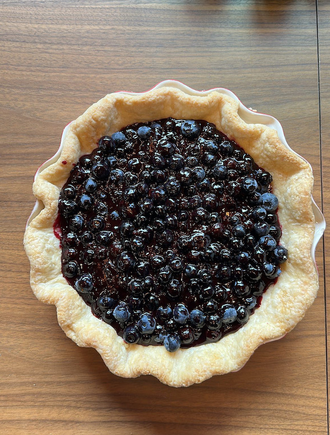

The secret to this blueberry pie is using fresh blueberries and leaving \(1/2\) of them completely uncooked. Adding the raw blueberries to the sweetened, cooked ones gives the pie a wonderful fresh taste and a nice tart flavor to complement the sweetness. This is probably my favorite pie, and my go-to during the summer.
This recipe was passed down to me by a true southern gentleman named Frank.
Add 2 cups of blueberries, water, sugar, salt and cornstarch to a small pot or saucepan. On low heat, stir all the ingredients together. Continue stirring until blueberries break down and release their juices, around 10-15 minutes. Mixture should thicken and look like pie filling. Add butter and lemon juice.
Toss in the remaining 2 cups of fresh blueberries into the cooked mixture, and stir to combine. Pour entire mixture into a pre (blind) baked crust. Oh, and the crust is important, so please make from scratch using my recipe.
Chill in the refrigerator overnight or at least 4 hours. This pie is best served cold.